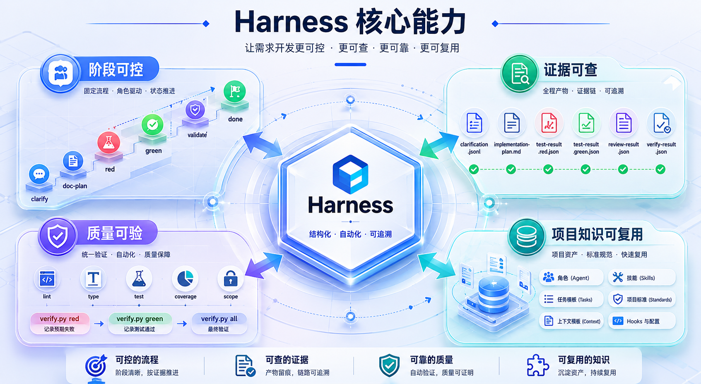
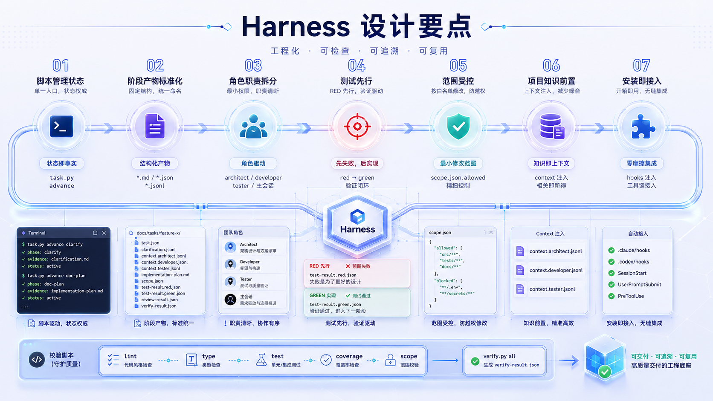

AI 从哪里理解需求？
需求需要先变成可交接文档，包含开发意图、范围边界、输入输出、业务流程和验收标准。
Harness 给 AI 方向、边界、工具、反馈和纠偏机制，让需求开发从不确定的模型输出，变成可检查、可复用、可推广的工程过程。
日常开发需求不能交给不确定的模型独立处理。
大模型像一匹跑得很快的马，速度很强，但企业研发不能只是给一句提示词就放它向前冲。代码任务里有需求理解、架构边界、接口契约、测试验证、评审验收和失败修正，任何一环失控都会把局部效率变成整体返工。
需求需要先变成可交接文档，包含开发意图、范围边界、输入输出、业务流程和验收标准。
项目规范、接口契约、测试规则和架构边界需要进入长期文档，而不是临时聊天补充。
项目知识应当前置生成，让 AI 主动读取规范和接口文档，减少反复询问研发人员。
实现者和验证者需要隔离，测试、架构、范围和质量检查共同判断交付是否成立。
失败结果要回到阶段状态和证据文件，重新进入正确阶段，而不是继续扩大修改范围。
问题、判断依据和修正方式需要进入项目知识或规范，成为下一次任务的前置上下文。
把需求、项目规范、接口契约和历史经验放到 AI 开始工作之前。
AI 按阶段、角色和任务范围完成设计、测试、实现和评审。
测试失败、验证失败、架构问题和人工意见进入明确的证据文件。
把已经出现的问题转成规则、约束、检查项或项目知识文档。
下一次需求开始前自动读取这些规则，让相同问题减少重复出现。
Harness 的目标不是限制 AI，而是让 AI 的能力更稳定、更可控、更可复用。
它是一套围绕 AI 研发过程搭建的工程系统：任务怎么定义，过程怎么执行，结果怎么评估，经验怎么积累，下次怎么复用。
需求先由人类想清楚，执行交给 AI，结果必须被 Harness 验证。
解决「到底想要什么」。需求文档必须写清为什么做、做什么、不做什么、输入输出、业务流程和验收标准。
把业务语言翻译成工程语言，形成技术计划、接口契约、任务拆分、修改范围和测试契约。人类必须 review 这份工程合同。
只有前两层一致以后，AI 才进入实现。规划、实现、评估职责拆开，避免同一个 AI 自己写、自己测、自己通过。

需求开发固定经过 clarify → doc-plan → red → green → review → validate → done。
关键判断和执行结果都进入文件，减少只依赖对话记录的不可追溯问题。
质量判断交给脚本、测试和范围检查，降低 AI 自述完成带来的不确定性。
项目画像、接口文档和工程规范先进入 docs/standards/，后续任务持续复用。

状态变化由脚本完成，AI 负责执行，脚本负责记录和校验。
每个阶段都有固定产物，让 review 和自动化具备稳定输入。
architect、developer、tester 分工明确，减少混合职责。
RED 先失败，GREEN 再实现，验证结果进入证据文件。
scope.json 描述允许范围，避免需求实现扩散到无关模块。
项目说明和接口文档先形成知识基线，后续任务持续复用。
脚本、hooks、skills 和目录结构一次安装，进入项目即可使用。
复杂需求先在团队内部形成一致理解，避免 AI 从含混描述开始工作。
需求文档成为本次开发的原始输入，AI 只能基于这份材料继续推进。
AI 基于项目知识、架构规范和接口文档检查需求是否缺失关键约束。
AI 把需求翻译成技术计划、接口契约、测试契约和变更范围。
负责人检查工程文档是否符合原始需求，确认后才允许进入编码。
实现完成后调用 Harness Check，执行测试、覆盖率、静态扫描和范围检查。
验证失败回到对应阶段修复，通过后再进入测试 Agent 和架构 Agent 验收。
测试角色基于工程契约检查代码是否满足验收标准和关键边界场景。
架构角色检查错误码、跨包调用、模块边界和项目规范是否被破坏。
测试与架构验收都通过后，向负责人呈现结果；失败则回到修正过程。
真正重要的不是马上让 AI 写代码，而是先把方向、边界、输入输出和验收标准讲清楚。
业务语言需要翻译成模块、接口、错误码、测试契约和修改范围，负责人 review 后才进入实现。
AI 犯错以后，错误需要变成证据、规则和项目知识，让下一次任务从更好的前置条件开始。
Harness 提供阶段、角色、证据、项目知识和质量检查。人类负责方向和裁决，AI 负责执行，脚本和证据负责验证。